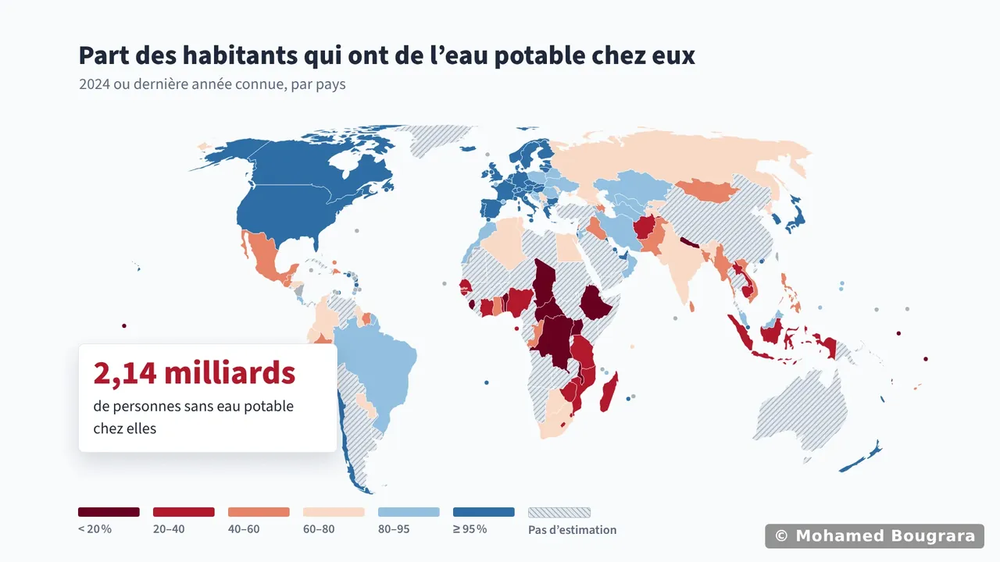

18 356 tués en six ans, identiques à l’unité aux bilans officiels de l’ONISR
Six ans d’accidents de la route, interrogés en SQL
Une jointure naïve gonflait de 14 % les tués de 2023 : je l’ai repérée et corrigée.
Lire les résultats et les requêtesJe recherche un stage en analyse de données ou en informatique décisionnelle à l’étranger, de 3 mois minimum, du lundi 29 mars au 20 août 2027, pour mon Master 1. Je suis citoyen français, avec une autorisation de travail dans l’UE.

Carte interactive · sur ce siteL’eau potable dans le monde, pays par paysPendant 14 mois au CEA-LITEN, le laboratoire des nouvelles énergies du Commissariat à l’énergie atomique et aux énergies alternatives, j’ai construit des outils de reporting et d’aide à la décision avec Power BI, SQL, VBA et Python.
J’y ai été recruté en stage, puis rappelé en alternance pour déployer ce que j’avais prototypé.
Je suis aujourd’hui en Master 1 Management des Systèmes d’Information à Grenoble INP et Grenoble IAE, après un BUT Science des Données.
Ma fenêtre de stage
Trois mois à placer où cela vous arrange dans cette fenêtre, plus longtemps si vous le souhaitez.
Le stage est obligatoire dans mon Master : il est encadré par une convention de stage signée avec mon université. Lettre de l’école (PDF)
Tous les pays sauf la France ; hors UE, un visa de stage est à prévoir.
Mon anglais est certifié B2 (Duolingo English Test, 115/160, mars 2026), et je le pratique en situation réelle : j’ai rédigé en anglais la documentation des outils que j’ai développés au CEA, pour les utiliser comme pour comprendre leur code, suivi une semaine de Power BI en anglais à Prague, et présenté nos résultats devant des enseignants tchèques.
Au CEA, j’ai relevé la méthode des gestionnaires avant de l’automatiser, et fait valider l’application par ses futurs utilisateurs.
Le rapprochement automatiséAu CEA, le reporting interroge l’entrepôt de données en SQL, puis s’appuie sur un modèle en étoile et des mesures DAX, les formules de calcul de Power BI.
Résultat : il se rafraîchit seul, au lieu d’être recompilé chaque mois.
Le reporting Power BISur 297 patients, j’ai écarté un modèle presque aussi juste qui renvoyait chez eux un malade sur trois : celui que je garde en dépiste 78 sur 100.
Ma prévision de fréquentation hôtelière est livrée avec sa marge : à trois mois, elle situe le taux à trois points près.
L’analyse de la maladie cardiaque« […] nous recommandons Mohamed pour des missions similaires. »
« Une fois ce que nous attendions clairement défini et formalisé, il l’a développé vite et en autonomie. […] Il a su livrer une présentation très claire de son travail, malgré la complexité du sujet et le peu de temps qu’il a eu pour l’appréhender. »
5 vues dans l’application, du score total jusqu’à chaque substance, toutes visibles dans la démonstration
L’analyse du cycle de vie chiffre ce qu’un produit coûte à l’environnement, de l’extraction du minerai jusqu’au recyclage.
Comparer deux technologies de batterie demandait de reprendre un tableur à chaque hypothèse. L’application le fait à l’écran : on choisit deux scénarios, et on lit tout de suite lequel pèse le plus, et sur quel impact.
Elle est conçue pour deux instituts du CEA : le LITEN, et l’ISEC, dédié à l’économie circulaire des énergies bas carbone.
Découvrir le projet18 356 tués en six ans, identiques à l’unité aux bilans officiels de l’ONISR
Une jointure naïve gonflait de 14 % les tués de 2023 : je l’ai repérée et corrigée.
Lire les résultats et les requêtes2062, pas 2030 : au rythme actuel, l’année où 99 % de la population mondiale aura l’eau potable chez elle
L’ONU l’a promise à tous pour 2030. J’ai mesuré le retard dans un rapport Power BI de 8 pages et 113 mesures DAX sur les estimations OMS/UNICEF de 235 pays et territoires, puis dans une carte interactive.
Ouvrir la carte et chercher un pays